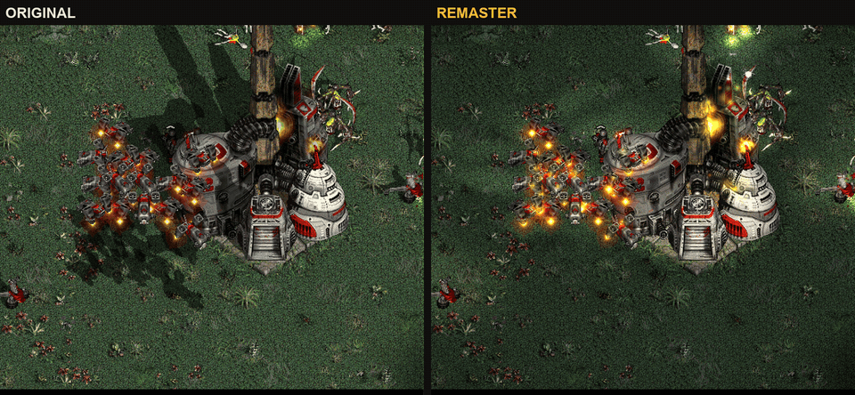
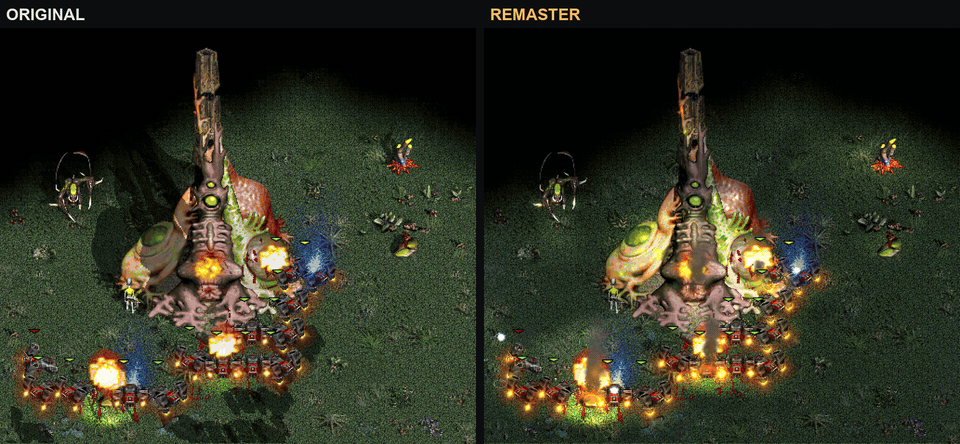
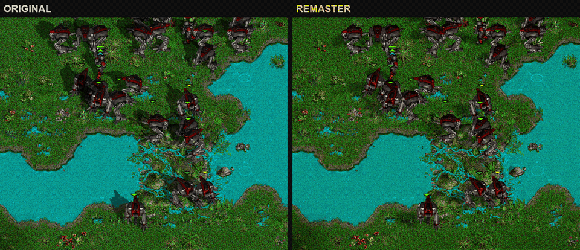
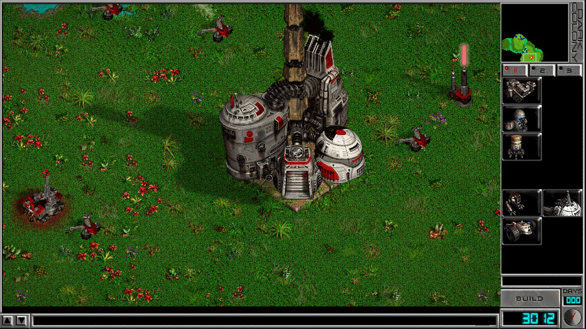
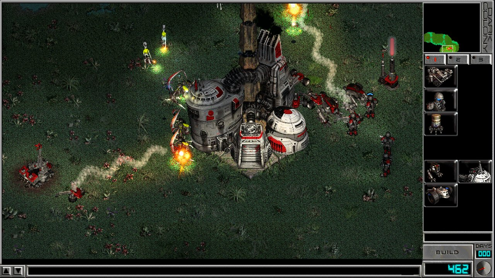
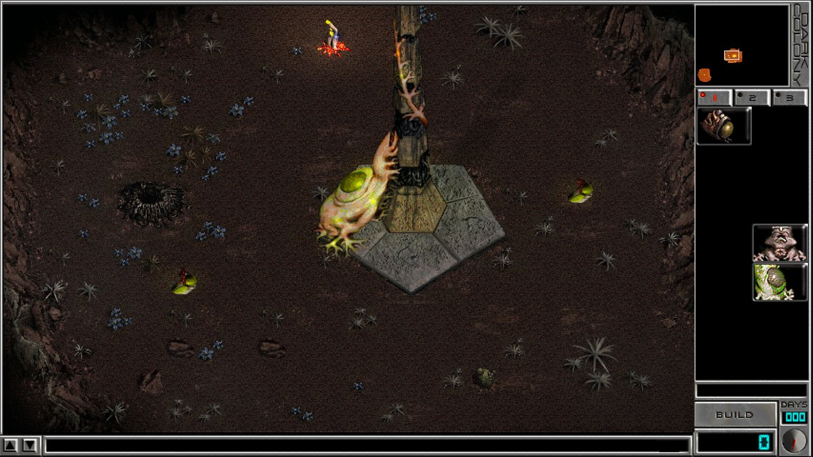
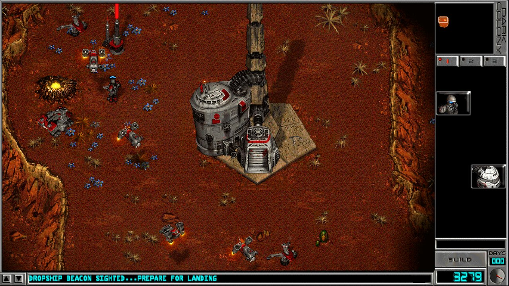

A 1997 RTS, REIMAGINED FOR MAC
Return
to Mars.
Dark Colony is coming back to life. Experience the classic as you remember it, and see it in a new light.
THE PROJECT
Two ways to
remember Mars.
Dark Colony Remaster is an independent project rebuilding the 1997 real-time strategy game for modern Macs. A custom C++20 and Metal engine brings two editions together in one application.
ORIGINAL focuses on the classic look, controls and rules. REMASTER keeps the same gameplay and adds a wider view, dynamic lighting, atmospheric shadows and effects.
The project is in development and uses data from an existing copy of Dark Colony.
ONE BATTLE. TWO PERSPECTIVES.
See the difference.
Same game state, same simulation ticks. The classic edition is on the left; the remaster is on the right.

Watch muzzle flashes and moving lights transform the same night battle.

A familiar encounter with new atmosphere and lighting.

The same units and movement, with the remaster's visual treatment.
These comparisons were rendered by the project's engine in ORIGINAL and REMASTER modes using the same saved game or simulation. ORIGINAL reproduces the classic presentation; the left side is not a recording of the 1997 executable.
FROM THE ENGINE
A closer look
at the remaster.
Real frames from the project, captured in November 2026. The images show work in progress.




WHERE WE ARE
Built for today.
Faithful to yesterday.
The human and alien campaigns, training, skirmishes against AI, saves, audio and music are running. The remaster continues to evolve, and some details still need testing and polish.
Future ideas include recreating the artwork from scratch for native 4K and exploring Windows and Linux ports for ARM. These are plans, not release promises.
HELP BRING IT BACK
Were you part of
Dark Colony?
I'm looking to connect with the original creators, former team members, or anyone with information about who to contact and how a release of this project might be possible.
If you can help or know someone who can, please get in touch through a GitHub issue. I'd be grateful to hear from you.
PO POLSKU
Powrót
na Marsa.
Dark Colony Remaster to rozwijany projekt przenoszący klasyczną strategię z 1997 roku na Maki z Apple Silicon. Własny silnik C++20 i Metal oferuje dwa tryby: wierny oryginałowi ORIGINAL oraz REMASTER z szerszym widokiem, światłem, cieniami i efektami.
Porównania pokazują te same stany gry i te same tiki symulacji w obu trybach naszego silnika. Działają kampanie, trening, potyczki z AI, zapisy, dźwięk i muzyka. Projekt korzysta z plików oryginalnej gry i nadal jest rozwijany.
W przyszłości planuję stworzenie grafiki od nowa dla natywnego 4K oraz rozważam porty na Windows i Linux dla ARM.
Szukam kontaktu z oryginalnymi twórcami Dark Colony oraz osobami, które wiedzą, z kim porozmawiać o możliwości wydania gry. Jeśli możesz pomóc, napisz przez GitHub.
Skontaktuj się przez GitHub